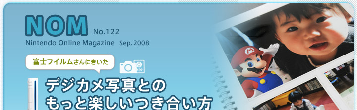
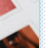
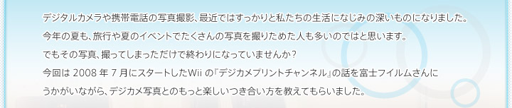
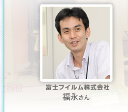
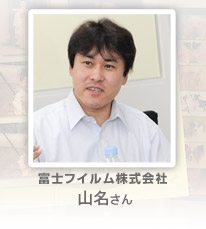
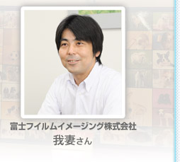
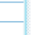

N.O.M
『デジカメプリントチャンネル』でプリントをお願いすると、家のプリンタで出力するのと比べてどんな違いがあるのでしょうか。
我妻
『デジカメプリントチャンネル』で注文していただいた写真は、富士フイルムが開発しました、画像処理の技術「イメージインテリジェンス Image Intelligence」を使って、写真を１枚１枚、最適な色に補正します。
我々はフイルム時代から蓄積してきた写真の技術を持っていて、写真の撮影シーンに合わせて、本来の人の目に見たものに近いような形に近づくようにきれいに最適化処理を施すことができます。この技術をプログラム化したものが「イメージインテリジェンス」です。一般の写真店向けに販売しているデジタルミニラボにもこの技術が使われています。
プロのカメラマンが撮影される場合は露出を測ったりですとか、撮影の条件が最適になるようにするんですが、一般の家庭ですとお出かけ先で撮影する場合、「ここでいいでしょう」、とバシっと撮るわけじゃないですか。そうしますと、光の具合によって色が飛んでしまったりとか、夜景が肉眼で見るともっときれいに見えているはずなのにちょっと暗く写ってしまったりすることがあります。そういった場合に、本来の人の目に見たものに近づけるような形できれいにするという技術がそのエンジンの中に入っています。
N.O.M
『デジカメプリントチャンネル』でお願いするすべての写真で調整してもらえるのですか。
我妻
はい。デジカメで撮影した写真でも携帯電話で撮影した写真でも、すべて「イメージインテリジェンス」の色変換を通りまして、プリントされます。
N.O.M
ここにたくさんのサンプルを用意していただきましたが、単に現像する以外にも、アルバムとして写真を注文できるフォトブックなどもありますね。
我妻
写真をプリントするだけだと、写真が一度にたくさん来てしまってアルバムに入れるのが面倒になってしまうという声をいただきました。せっかく届いても、それが負担になってしまってはもったいないですし。
『デジカメプリントチャンネル』でも商品の送り先を複数登録できるので、離れて暮らしている、おじいちゃんおばあちゃんに毎月フォトブックを作って、「うちの子はこんなに大きくなっています｣と贈ってあげるという使い方もできますよね。
フォトブックの大きさは、スクウェアタイプとA4サイズのスタンダードタイプの２種類があります。デザインを複数用意していますので、それからチョイスして、『デジカメプリントチャンネル』の中で写真をはめていくだけでも楽しいです。ご家族で、「この写真が上に入るかな、やっぱりこっちでしょう、いやいやこっち」みたいな。
福永
自分で撮った写真でアルバムを作ると、プリントされた写真をアルバムに貼り付けるという感じになるんですが、フォトアルバムのようにしっかり一枚の紙に印刷されているというのは、ご家庭ではなかなかできないかなと思います。
N.O.M
そして名刺も注文できます。
我妻
写真を入れてもらうタイプと、『似顔絵チャンネル』で作ったＭｉｉが入るタイプの２つをご用意いたしました。任天堂から「Ｗｉｉ番号（※）の入った名刺はできないですか？」というご提案をいただきまして、私たちも、名刺プリントをもっと展開したいところでしたので、ぜひとも商品化しましょうということになりました。
※お知り合いのＷｉｉをＷｉｉフレンドに登録するための16桁の番号のこと。Ｗｉｉフレンドになると、Ｗｉｉ伝言板でメッセージやゲームのデータを送りあうことができます。
デザインも、名刺らしい白い台紙はもちろん、カジュアルなデザインやマリオやピーチ姫のキャラクターが入っているデザインを用意しました。サービス開始当初に調べたんですけど、こちらのキノコがワンポイントとして入ったデザインが、実は一番人気なんです。ちょこっと入っている可愛さが受けているようで。
名前のほかに、住所などを入力するフリースペース欄がありまして、そちらが最大３行、54文字まで、住所以外の内容でも入れることができます。たとえば、「マリオカートやりましょう」と入れて、合わせてフレンドコードが入っているとか、ということができるんです。小学校などでお子さんの間でもブレイクしてほしいなと期待しています。
N.O.M
子供の頃って名刺に憧れますよね。
我妻
そうですね。その辺りも考えて、名刺は本物の名刺入れに近い形をした専用のケースに入っています。お子さんが、ちょっと大人のふりではないですけど（笑）、名刺入れから名刺を出すように使っていただけるようになっています。
N.O.M
名刺を注文したのがきっかけで、写真も注文してみようという流れもできそうですね。
福永
自分の写真でオリジナルの名刺を作るということをきっかけにして、『デジカメプリントチャンネル』を活用していってほしいですね。一度注文していただくことで手順を理解してもらえると思いますので、「そういえばデジカメプリントってあったね」となって次に繋がってくれればと期待してます。
NOM9月号トップページへ
Ｗｉｉウェア 注目ソフトレビュー


 写真をプリントするだけだと、写真が一度にたくさん来てしまってアルバムに入れるのが面倒になってしまうという声をいただきました。せっかく届いても、それが負担になってしまってはもったいないですし。
写真をプリントするだけだと、写真が一度にたくさん来てしまってアルバムに入れるのが面倒になってしまうという声をいただきました。せっかく届いても、それが負担になってしまってはもったいないですし。 自分で撮った写真でアルバムを作ると、プリントされた写真をアルバムに貼り付けるという感じになるんですが、フォトアルバムのようにしっかり一枚の紙に印刷されているというのは、ご家庭ではなかなかできないかなと思います。
自分で撮った写真でアルバムを作ると、プリントされた写真をアルバムに貼り付けるという感じになるんですが、フォトアルバムのようにしっかり一枚の紙に印刷されているというのは、ご家庭ではなかなかできないかなと思います。